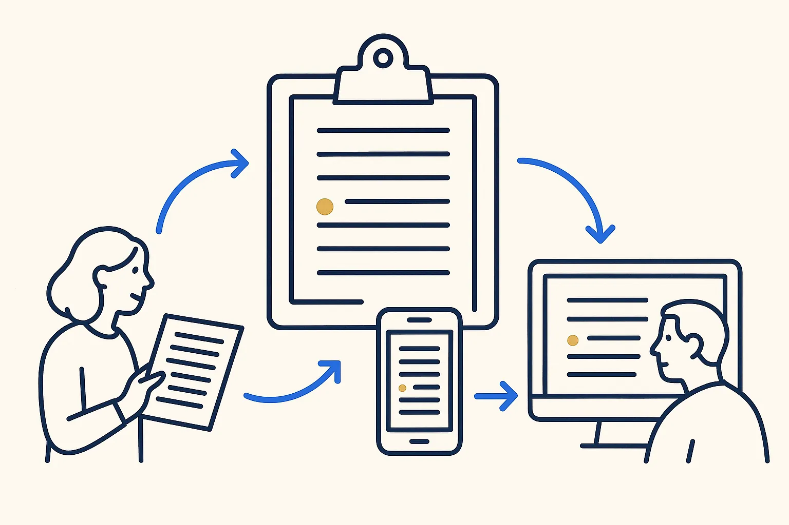

Sample · beginner
One list, three places
A list your company keeps in three places becomes one source with two generated publications.

Based on: One source, three publications: birthdays · Level: beginner · Time: 45 minutes live, or one Build Day afternoon
Steps
- Pick one list that lives in several places: prices, opening hours, staff, products.
- Make one file the source; delete nothing yet.
- Generate the other two places from it.
- Run it dry first and compare with what is there now.
- Agree: from today, only the source is edited.
What you take home
A working result on example data, the rules written down, and the list of cases the rules did not cover — the honest next step.